臼井社宅（1998年9月13日撮影） 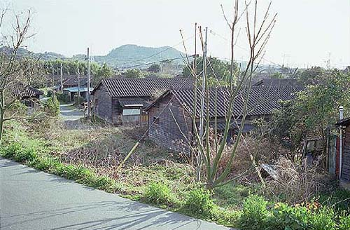 臼井社宅（2000年3月岩本さん撮影） 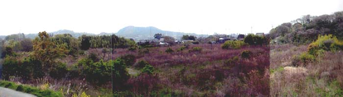 同社宅跡(2003年4月2日撮影) 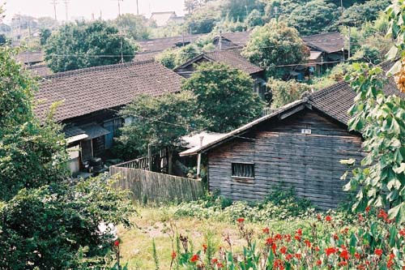 臼井社宅（1998年9月13日撮影） 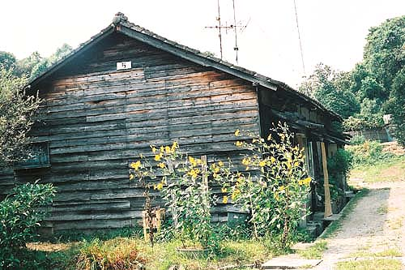 臼井社宅5棟（1998年9月13日撮影） 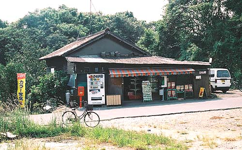 臼井社宅近くの駄菓子屋（1998年9月13日撮影） BACK NEXT
臼井社宅（2000年3月岩本さん撮影） 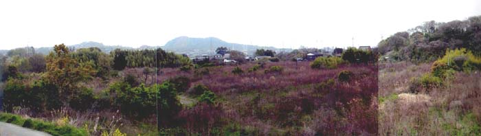 同社宅跡(2003年4月2日撮影) 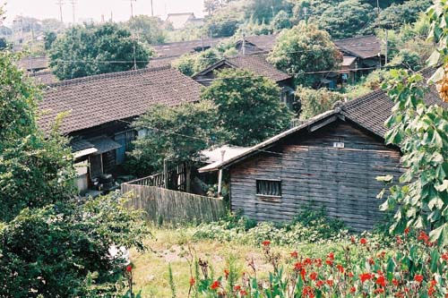 臼井社宅（1998年9月13日撮影） 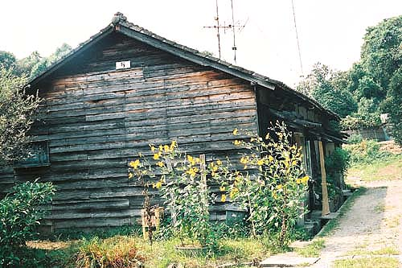 臼井社宅5棟（1998年9月13日撮影） 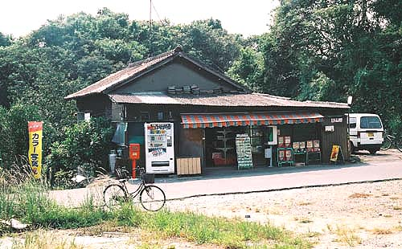 臼井社宅近くの駄菓子屋（1998年9月13日撮影） BACK NEXT
同社宅跡(2003年4月2日撮影) 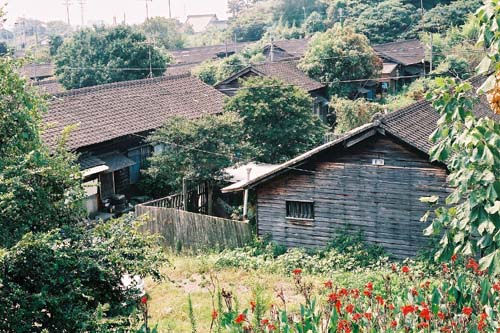 臼井社宅（1998年9月13日撮影） 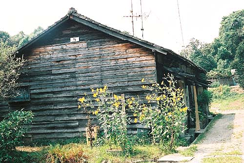 臼井社宅5棟（1998年9月13日撮影） 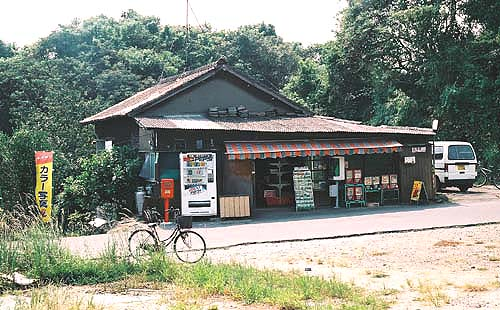 臼井社宅近くの駄菓子屋（1998年9月13日撮影） BACK NEXT
臼井社宅（1998年9月13日撮影） 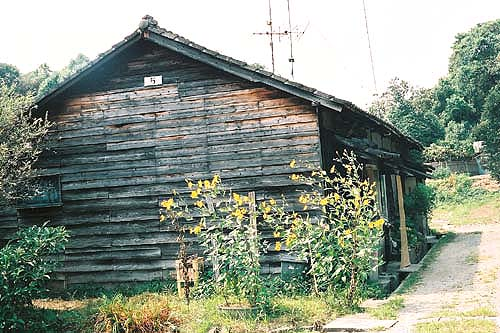 臼井社宅5棟（1998年9月13日撮影） 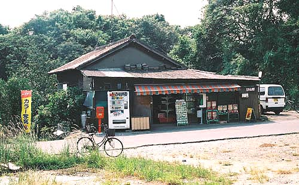 臼井社宅近くの駄菓子屋（1998年9月13日撮影） BACK NEXT
臼井社宅5棟（1998年9月13日撮影） 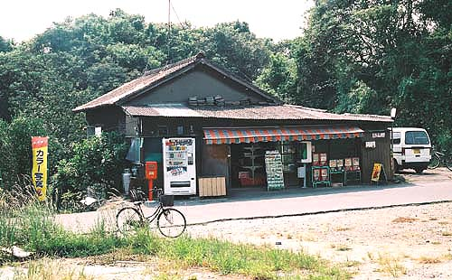 臼井社宅近くの駄菓子屋（1998年9月13日撮影） BACK NEXT
臼井社宅近くの駄菓子屋（1998年9月13日撮影） BACK NEXT